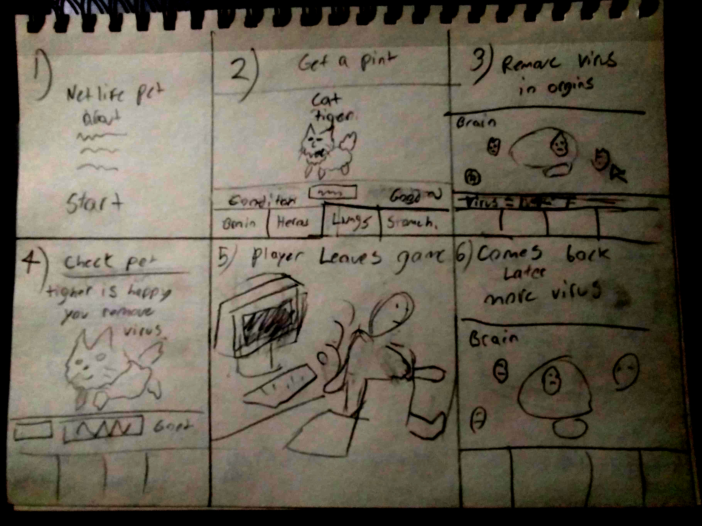
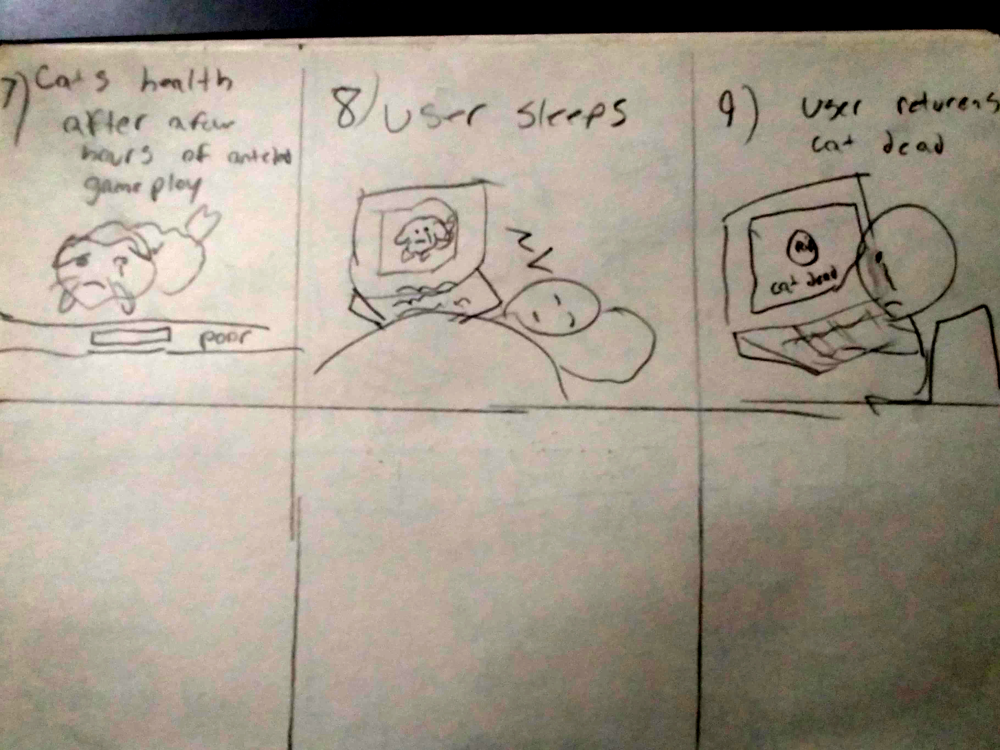

Proposal: Lifeline Pet!
About:
I wish to create an environment that represents the origins of a living animal which the user will have to return to, every so often, to remove viruses that are slowly eating away at the animals life. The user will act as a doctor whos trying to preserve the life of the digital pet for as long as they can. When the game starts up the user will be given a randomized animal to which they will be responsible for removing virus that appear in the creatures organs after a period of time. They are four organs that the user is concerned with: the brain, heart, lungs and stomach. Once every hour a number of viruses from 0 to 3 will appear in each one of the animals organs. Every half an hour for each virus that remains the animal will take a point of damage. The user is tasked with removing these bugs everyday until the digit pet succumbs to their digital disease.
The topic of this project deals with the preservation of life and how long are we willing to hold on to a living thing before we let go. I feel this is important because this theme deals with issues of how family and doctors deal with dying patient When a dying friend, family member or patient is passing away due to a disses or want not, there is only so long before the inevitable happens. I find this project could be meaningful to show the responsibilities of preserving a living things life despite knowing that it will inevitably pass on. I also want to use cute like animals not to make the experience to grim. Also, I want to have a set of random animals with a random name that can be assigned so that the user can feel a special connection to that animal. That way different users can talk to each other about how their unique animals is doing. Adding uniqueness will motivate the user to check in to their animal more often, and make the experience more heartbreaking when the animal finally dies.
Similar Projects:
Neopets
Neopets would be the closet networked spaced project that I can find that is similar to my own. Neopets is a virtual pet website where users can own and create their own virtual pet called Neopets. Users can care and explore a virtual world called Neopia with their pets. There is no end goal or objective of the game just that the users are expected to feed and care for their Neopets. Neopets can grow hungry and become sick. The Neopets cannot die id they are neglected but their health will limit the gameplay. Neopets can also be given accessories in various other clothing. Neopets is described as one of the stickiest sites for children as this site would be able to hold users attention for a very long time. The average user would normally spend 2 hours and 45 minutes per month.
Petpet Park
Petpet Park is the next online example that comes to mind. This game was similar to Neopets however had a greater world focus. Petpet park allowed users to train their neopets tough activities and challenges. They also let users explore the park with their pets and meet friends online. The game was based and focus on Neopets IP so it can be argued that Petpet Park was an upgrade version Neopets. Users can also adopted and care for their pets just like in Neopets. Also Users can adopted a smaller kind of neopet called Petpets to accompany their Neopets. Petpets needed to feed and taken care of as well.
Tamagotchi Pets and Nano Kitty/Puppy
The handheld digital pets games such as Tamagotchi pet, and Nano kitty/puppy are the only projects that come to mind that are similar in a way. They are not a networked space as they are little LCD devices where users had to take care of a pet on the device. Users would have to clear, feed and even play with their pet. If the user, however, neglected to take care of their pet, their pet would die as a result. These devices were made to give children a sense of responsibility. However, these devices normally got banned at schools due to being very noisy and kids over worrying about their pets well being. Interestingly there's toys really did create an emotional attachment with their users so much so that their addictive nature is what got them banned in a few countries.
Difference
What makes Lifeline Pet different is that the user does not have to play, clean or feed their pets. The users is tasked with removing viruses in their organs to postpone the pets intivable death. Lifeline pets heth are already on the decline and cannot recover their health. If the pet took a ton of damage from user’s neglection to remove virus over time then that damage is permanent. This strategy too would only make the addition to the project shorter than Neopets and Tamagotchis as they will die out evenently. Lifeline pets should not last long as if the user leaves them for too long they will die much faster than a Tamagotchis. Given that each virus will give one point of dame every 30 minutes and spawn more ever 1 hour, going to sleep for the night should have the user wake with a pet halfway through their life cycle. The pet’s lifeline are not supposed to be long to insure that user don’t get addicted their pet for to long and to leave a heartbreaking impact on the user much faster.
Storyboard:
This is the storyboard of the game in steps
- Title screen: Users sees the title of the game and read’s instructions. User starts game here.
- User is assigned a pet with a random name: in this case we have a cat named Tiger.
- The user goes into the different organs to remove virus. Users removes virus by clicking on them.
- User then checks on their pet. Tiger is happy that the user removed the bugs.
- Player leaves the game.
- But comes back to find more virus over time.
- Tigers health is not doing good at this point.
- Player then leaves the game again after removing more virus. For example Tiger is getting more viruses as the user sleeps.
- User returns to game to find Tiger has passed on.
The user can then restart the game to get a new animal and repeat the process again. Please see the images of the storyboard below.
 